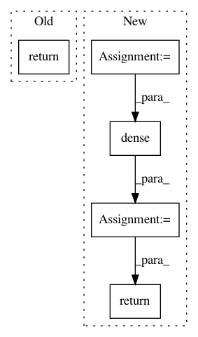

45ba4bbdd47b51ee607a62b49a0cad1f0d9ff917,python/baseline/tf/lm/model.py,LanguageModelBase,embed,#LanguageModelBase#,254
Before Change
embeddings_out = embedding.encode(x)
all_embeddings_src.append(embeddings_out)
word_embeddings = tf.concat(values=all_embeddings_src, axis=-1)
return tf.layers.dropout(word_embeddings, rate=self.pdrop_value, training=TRAIN_FLAG())
@classmethod
@tf_device_wrapper
def load(cls, basename, **kwargs):
After Change
embeddings_out = embedding.encode(x)
all_embeddings_src.append(embeddings_out)
word_embeddings = tf.concat(values=all_embeddings_src, axis=-1)
embed_output = tf.layers.dropout(word_embeddings, rate=self.pdrop_value, training=TRAIN_FLAG())
projsz = kwargs.get("projsz")
if projsz:
embed_output = tf.layers.dense(embed_output, projsz)
return embed_output
@classmethod
@tf_device_wrapper
def load(cls, basename, **kwargs):
In pattern: SUPERPATTERN
Frequency: 3
Non-data size: 5
Instances
Project Name: dpressel/mead-baseline
Commit Name: 45ba4bbdd47b51ee607a62b49a0cad1f0d9ff917
Time: 2019-05-21
Author: dpressel@gmail.com
File Name: python/baseline/tf/lm/model.py
Class Name: LanguageModelBase
Method Name: embed
Project Name: OpenNMT/OpenNMT-tf
Commit Name: 90c9bef26efb3dd32dcf3a5bf77bf349745222b6
Time: 2017-08-16
Author: guillaume.klein@systrangroup.com
File Name: opennmt/utils/transformer.py
Class Name:
Method Name: multi_head_attention
Project Name: yangyanli/PointCNN
Commit Name: 9f0eca493539f189c20c9bc5ecd3a353e682c8d7
Time: 2018-04-16
Author: yangyan.lee@gmail.com
File Name: pointcnn.py
Class Name:
Method Name: xconv